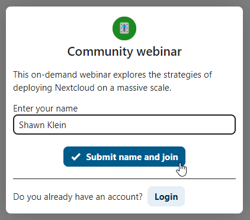

إنضَمّ إلى المكالمة أو المحادثة كضيفٍ
يقدم "المحادثة" في نكست كلاود Nextcloud Talk مكالمات صوتيةو فيديو و دردشة نصية مدمجة في نكست كلاود. يوفر واجهة ويب بالإضافة إلى تطبيق على الجوال.
يمكنك الحصول على مزيد من المعلومات عن "المحادثة" من نكست كلاود Talk على موقعنا <https://nextcloud.com/talk/>.
الانضمام إلى الدردشة ...
إذا وصلك رابط محادثة، يمكنك فتحه في متصفحك للانضمام. هنا، سيُطلب منك إدخال اسمك قبل الانضمام.
{kind=link}
يمكنك أيضًا تغيير اسمك لاحقًا بالنقر فوق الزر "تحرير Edit" الموجود في أعلى اليمين.

إعدادات الكاميرا والميكروفون يمكنك إيجادها في قائمة الإعدادات Settings . هناك يمكنك أيضًا العثور على قائمة بالاختصارات التي يمكنك استخدامها.

الانضمام إلى مكالمة ...
يمكنك بدء مكالمة في أي وقت باستخدام زر بدء الاتصال Start call. سيتم إخطار المشاركين الآخرين ليمكنهم الانضمام إلى المكالمة. إذا بدأ شخص آخر مكالمة بالفعل، فسيتغير الزر إلى الأخضر للانضمام إلى المكالمة Join call.

قبل الانضمام فعليًا إلى المكالمة، سترى فحصًا للجهاز، حيث يمكنك اختيار الكاميرا والميكروفون المناسبين، أو تمكين طمس الخلفية blur أو حتى الانضمام من أجهزة أخرى.

أثناء المكالمة، يمكنك العثور على إعدادات الكاميرا والميكروفون في قائمة ... في الشريط العلوي.

أثناء المكالمة، يمكنك كتم صوت الميكروفون و تعطيل كاميراتك باستخدام الأزرار الموجودة في أعلى الصفحة، أو باستخدام الاختصارات M لكتم الصوت أو V``لتعطيل الكاميرا. يمكنك أيضًا استخدام ``مسطرة المسافة space bar' لتبديل كتم الصوت. عندما يتم كتم صوتك، سيؤدي الضغط على مسطرة المسافة إلى أن تمكينك من التحدث طالما ما زلت ضاغطاً على مسطرة المسافة. إذا تم إلغاء كتم صوتك، فسيؤدي الضغط على زر المسافة إلى كتم صوتك حتى تتركه.
يمكنك إخفاء الفيديو الخاص بك (مفيد أثناء مشاركة الشاشة) باستخدام السهم الصغير أعلى تدفق الفيديو مباشرة. أعده بالسهم الصغير مرة أخرى.
إعدادات أخرى
في قائمة المحادثة، يمكنك اختيار الانتقال إلى وضع ملء الشاشة. يمكنك أيضًا القيام بذلك باستخدام المفتاح F على لوحة المفاتيح. في إعدادات المحادثة، يمكنك العثور على خيارات الإشعارات والوصف الكامل للمحادثة.